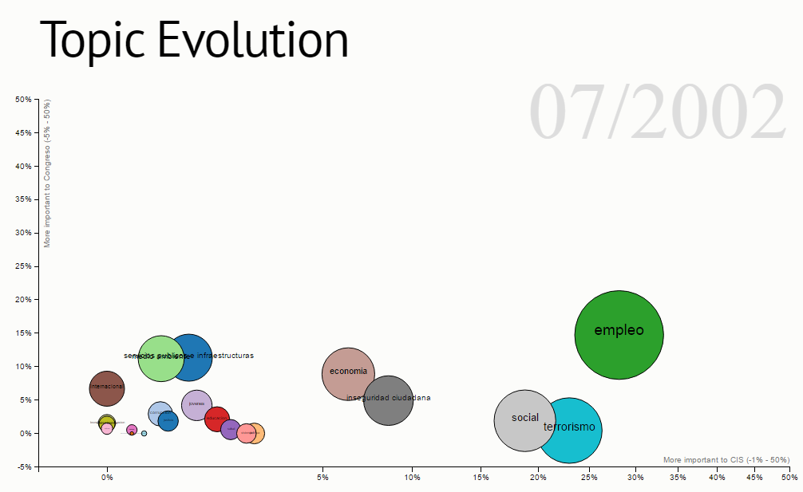

Evolución de los intereses
La evolución de los intereses de los ciudadanos y su tratamiento en los debates del Congreso a lo largo de las últimas legislaturas.

Líneas políticas
Los principales temas, las palabras clave que hemos relacionado con ellos y el partido político que habla sobre ellas.
¿Quieres saber lo que dicen sobre algún tema en concreto?

¿Qué dicen?
Existen partidos de derechas y de izquierdas pero, ¿Cuales hablan mas de....?
Busca la palabra clave y veras que lado habla mas sobre ello.